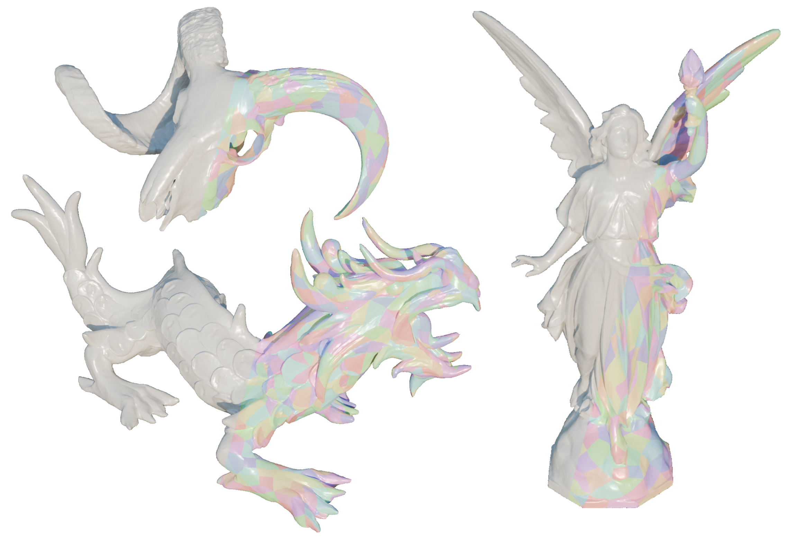
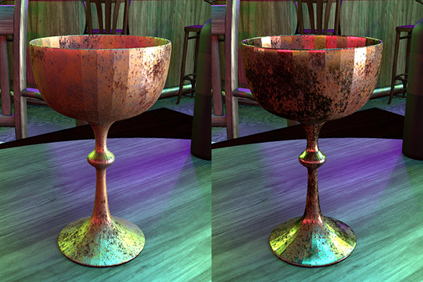

Modeling and Rendering Glow Discharge
SIGGRAPH 2025
Defines a model for glow discharge, a form of light-emitting electrostatic discharge commonly found in Neon lights and gas discharge lamps. Takes inspiration from computational physics to develop an efficient point-wise solver for emission due to glow discharge suitable for traditional volume rendering systems. Distills the complex mechanics of this process into a set of flexible and interpretable parameters, demonstrating that the model can replicate the visual qualities of glow discharge under varying gases and conditions.
Develops a method for accurate geometric reconstruction of opaque surfaces from images by leveraging Gaussian surfels to splat geometry fields. Derives an efficient, nearly exact differentiable rendering algorithm for geometry fields parameterized by Gaussian surfels, eliminating the limitations of conventional approximations. Ensures continuity in the rendered colors despite surfel clustering and demonstrates significant improvements in the quality of 3D surface reconstruction across standard benchmarks.
Neural Geometry Fields for Meshes
SIGGRAPH 2024 (Conference)

Introduces a novel neural representation for 3D mesh surfaces by utilizing coarse quadrangular patches for geometric modeling and leveraging coordinate neural networks for detail refinement. Represents discrete surface geometry as a continuous field, enabling the extraction of traditional triangular meshes by sampling neural displacements. Excels at mesh compression, drastically reducing memory usage without compromising surface detail, and enhances the versatility of neural surface representations for discrete mesh data.
Parameter-space ReSTIR for Differentiable and Inverse Rendering
SIGGRAPH 2023 (Conference)

Develops an algorithm to efficiently reuse Monte Carlo gradient samples between gradient descent iterations in differentiable rendering, drawing inspiration from reservoir-based temporal importance resampling. Reformulates differential rendering integrals in parameter space and presents a novel estimator for handling negative functions, enabling substantial reduction in gradient error and faster convergence for inverse rendering tasks involving intricate lighting and textures.